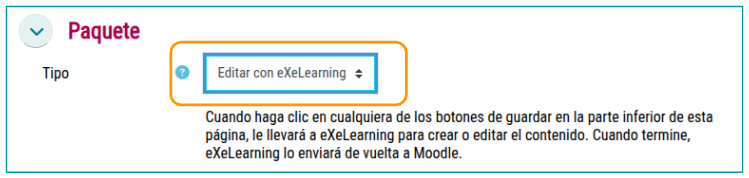
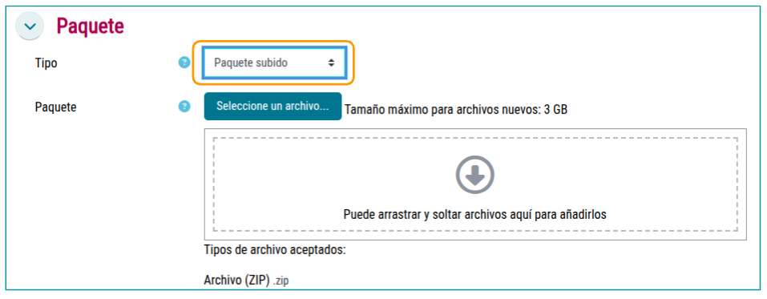

Elpx files created with eXeLearning 3.0 have a significantly different structure than the elp generated with exe 2.9 and previous versions. As it is a recently launched version, many platforms and web environments are not yet prepared to work with this new file structure. However, it is expected that, over time, these platforms will be up-to-date to offer compatibility.
Meanwhile, we can use some alternatives that are already compatible, such as Moodle.
This list will be updated as new compatible platforms arise.
NOTE: The Procomun repository and the eXeReader app for mobile devices, used for the management and viewing of content created with eXaLearning 2.9, are not yet compatible with the content generated in the version 3.0 of eXoLearning.
Posted in Moodle
We can upload the contents created with eXeLearning to a Moodle platform in different formats, such as Website, SCORM or IMS Content Package. In addition, if the Moodl platform has the online version of eXiLearning integrated through the eXaScorm and/or eXoWeb plugins, it is possible to create and edit contents directly from the LMS, without having to leave the platform.
In any of the two cases, we must have clear in what format we will present the materials in Moodle: SCORM, IMS or Website.
- by Scorm: If we want to save the notes of the iDevices that has said option and follow the pages viewed by the student. we recommend exporting in SCORM1.2 since Moodle does not support SCORm2004 currently.
- by IMS: If we just want to show the contents but we want that package to keep its metadata when uploaded to Moodle.
- websiteThis is the most recommended option if we have not used the iDevices named above, since it offers a more attractive view as we can see below.
Posting content created with eXe on Moodle
In this case, we will upload to Moodle a content previously created in eXeLearning and exported as SCORM1.2, IMS or website.
Published as SCORM
The steps:
- We added a “Scorm Package” activity.
- We fill out the data and upload our SCORM package.
- We keep it.
- To view it, we click on the activity title and then on the Enter button. Moodle will use its own SCORM visor to display the resource, so the appearance may differ from how it was originally seen in eXeLearning.
Remember Moodle does not support SCORM2004, so we recommend making the export on SCORm 1.2.
Published as IMS
The steps:
- We added a "IMS Content Package" resource.
- We fill out the data and upload our IMS file.
- We keep it.
- Moodle will use its own IMS visor to display the resource, so the appearance may differ from how it was originally seen in eXeLearning.
Publishing as a Website
The steps:
- We add a “archive” resource.
- We fill out the data and upload our website file (.zip).
- We click on the uploaded file. In the window that appears, we click on Remove. A series of files and folders will appear.
- We click on the file. by index.html And, in the window that appears, we click Configurate as the main file.
- Guarded
- To view it, we click on the title of the resource. In this case, we will see all the content with the menu and style defined in eXeLearning.
Create and/or publish in Moodle with eXe plugins
The eXe for Moodle plugins facilitate the creation, modification and publication of contents from the LMS itself. The code of these two plugins (one for SCORM contents and another for contents in Website format) is published on the website. Official repository of GithubTo use them you need to have an eXe online instance, a Moodle platform and the plugins installed.
The operation is very simple.
To create a content with eXeLearning from Moodle, we will enter a course within our platform and follow the following steps:
Step 1
We add an activity such as “eXeLearning (SCORM)” or “exeLeaching (Website)”.

Step 2
We write a title and leave selected the option “Create with eXeLearning”. If we need it, we can edit the configuration options (appearance, qualifications...). By clicking on “Save and Show” we will open eXE online and we will be able to create our material.

Once we have finished editing the material, we will click on the Finish button (set up to the right) and we will have it available in our course.
Step 3
If we need to modify or continue with the edition, we will enter the resource and click on the “Edit with eXeLearning” button.

Step 4
We also have the possibility to publish and modify the package created with eXeLearning instead of creating it from scratch. For this, once selected the activity “eXe Learning (SCORM)” or eXiLearning (website)” we will choose the option of “Package uploaded” in the field “Pakage”.
